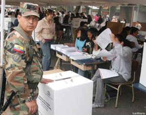

Consulta popular Ecuador 2011
A LAS URNAS DE NUEVO EL 7 DE MAYO
RAZONES Y SINRAZONES
DE LA CONSULTA POPULAR
Mary Ellen Fieweger

A dos meses de la Consulta Popular, convocada por Rafael Correa, los medios tradicionales y digitales ya han dedicado grandes espacios al debate sobre su razón –o sinrazón– de ser. Las voces de la banda oficialista afirman que la Constitución le da al jefe de Estado el derecho de consultar al pueblo sobre asuntos de peso. Y para los oficialistas, no existe tema más pesado hoy en día que la inseguridad ciudadana cuyas víctimas incluyen personajes importantes de la vida pública como Augusto Barrera, alcalde de Quito, y Fánder Falconí, ex canciller de la República.
Mediante la Consulta Popular, el Jefe de Estado propone poner fin a la delincuencia. Esto hará al introducir cambios de fondo en la detención preventiva de sospechosos y en la forma en que se seleccionan los jueces. El presidente Correa pretende, en sus propias palabras, “meter mano en la Justicia”. Y espera hacerlo cobijado por el ‘Sí’ del pueblo en las urnas.
Para las personas que cuestionan la Consulta Popular, lo que pretende el Presidente es una violación monumental de la Constitución. Y es una gran sinvergüencería que pide al pueblo la autorización para justificarla. Peor, argumentan estas voces, lo propuesto por el Presidente no solucionará la inseguridad que padece la ciudadanía, ni mucho menos. Lo que sí hará es darle al Ejecutivo el poder absoluto al permitirle manejar las riendas de las tres funciones del Estado. O sea, el triunfo del ‘Sí’ en la Consulta Popular será el inicio del fin de la democracia en el país.
La oposición a la Consulta comprende una gama amplísima de la sociedad ecuatoriana: la mayoría de sindicatos, la Confederación de Nacionalidad Indígenas del Ecuador (CONAIE), los decanos de las facultades de Derecho de todas las universidades del país más estudiantes y profesores de este y otros campos de estudio, movimientos sociales, partidos políticos de oposición a Alianza País (AP), empresarios…en fin.
Dedicamos este Reportaje Especial a las voces a favor y, sobre todo, a las voces en contra de la Consulta puesto que, a través de los medios que pertenecen al Estado –que son muchos–, los programas sabatinos del Presidente y la lluvia de cadenas nacionales y spots publicitarios contratados por el Régimen, dentro de poco todos estaremos empapadísimos por los argumentos del Jefe de Estado.
Definición de los términos
La Consulta Popular del 7 de mayo incluirá diez preguntas divididas en dos grupos de cinco cada uno. El primer grupo, el Referéndum, contiene cuatro preguntas (1, 2, 4 y 5) que, al ser aprobadas, resultarían en cambios en la Constitución. El segundo grupo, denominado Consulta, consiste en preguntas que, al ser aprobadas, tendrían que ser convertidas en leyes por la Asamblea Nacional. Junto con la tercera pregunta del primer grupo, las preguntas del segundo grupo no implican cambios en la Constitución.
¿En qué se basa la decisión de ir a una Consulta Popular?
La respuesta sencilla a esta pregunta es la ofrecida por el presidente Correa: el pueblo soberano tiene el derecho de opinar sobre asuntos importantes. Entre estos asuntos está la seguridad ciudadana, como ya mencionamos. El Gobierno argumenta que los niveles de delincuencia de hoy se deben a dos factores: el hecho de que la Ley protege los derechos de los delincuentes mientras desprotege a sus víctimas, y la corrupción de los jueces que permite que los malhechores sigan en la calle. La solución se encuentra en las preguntas 1 y 2 del referéndum. Ambos les quitan derechos a los acusados de crímenes, al extender el período de prisión preventiva y al permitir que un acusado siga tras las rejas por un tiempo indefinido sin ser enjuiciado.
En cuanto a los jueces corruptos, las preguntas 4 y 5 permitirían al Ejecutivo “meter mano en la Justicia”. La cuarta suprimiría el Consejo de la Judicatura, responsable por el nombramiento de jueces en base de méritos, una medida incluida en la Constitución para evitar la politización de la Justicia. Según el presidente Correa, no funciona el Consejo y, por eso, requiere sustituirlo durante 18 meses por otra entidad en donde el Ejecutivo, la Asamblea y la Función de Participación Ciudadana y Control Social nombrarían los jueces.
La quinta pregunta, al ser aprobada, modificaría la composición del Consejo de la Judicatura.
Los argumentos en contra de lo propuesto por el Presidente son múltiples.
Las razones de la oposición
 Las voces en contra de la Consulta Popular basan su posición en una serie de argumentos. En primer lugar, todo el mundo está de acuerdo en que el Presidente tiene el derecho de convocar a una Consulta Popular. En lo que discrepan con el Primer Mandatario es el contenido de la Consulta del 7 de mayo. Y basan su argumento en la misma Constitución que, en su artículo 144, requiere que los cambios a la Carta Magna sean elaborados por una Asamblea Constituyente. O sea, esta Consulta constituye una violación de la Constitución por parte del Ejecutivo.
Las voces en contra de la Consulta Popular basan su posición en una serie de argumentos. En primer lugar, todo el mundo está de acuerdo en que el Presidente tiene el derecho de convocar a una Consulta Popular. En lo que discrepan con el Primer Mandatario es el contenido de la Consulta del 7 de mayo. Y basan su argumento en la misma Constitución que, en su artículo 144, requiere que los cambios a la Carta Magna sean elaborados por una Asamblea Constituyente. O sea, esta Consulta constituye una violación de la Constitución por parte del Ejecutivo.
El segundo argumento en que toda la oposición está de acuerdo se radica en la naturaleza de una democracia. Este sistema de gobierno surgió como alternativa a la tiranía de la monarquía absoluta que regía en los países europeos desde el siglo XV hasta el siglo XIX. Para prevenir tiranías en el futuro, los arquitectos del nuevo sistema de gobierno insistían en la importancia de evitar que todo el poder estatal cayera en manos de una sola persona o función. Por eso, inventaron la separación de poderes del gobierno en tres funciones: la Legislativa es la función que elabora las leyes, la Ejecutiva es la que ejecuta o implementa las leyes y la Judicial es la que interpreta las leyes.
Pero el Movimiento País, cuyo líder máximo es el Presidente, se creó para ir aún más allá. Su propósito fue, mediante la denominada revolución ciudadana, ampliar el círculo de poder, invitar a una participación mayor por parte del pueblo. No obstante, el círculo de Rafael Correa, que incluye asesores de la derecha febrescorderista, ha achicado esta participación mediante la transformación de la revolución ciudadana en un proyecto personalista cuyo único fin es conservar y aumentar el poder del Ejecutivo. Este hecho es más que evidente en la Consulta Popular, dicen los opositores.
Consecuencia de la convocatoria a la Consulta Popular
El analista Pablo Ospina Peralta afirma que la convocatoria a la Consulta ha provocado “el más grande sismo político interno que haya conocido el gobierno ciudadano desde su posesión en enero de 2007”. La oposición al Régimen ahora cuenta con una larga lista de fundadores del Movimiento País, ex funcionarios del Gobierno actual, asambleístas y ex asambleístas constitucionales. La lista incluye: el economista Alberto Acosta, ex presidente de la Asamblea Constituyente; Fernando Vega, sacerdote y ex asambleísta constitucional; Betty Amores, fundadora del Movimiento País; Gustavo Darquea, ex asambleísta constituyente para AP; Gustavo Larrea, ex ministro de Gobierno y fundador de Movimiento País; María Paula Romo, miembro fundadora de Ruptura de los 25 y asambleísta; Manuela Gallegos, ex ministra de la Secretaría de Pueblos, entre otros.
Estos personajes han hecho públicas las razones para su oposición a la Consulta. Según Betty Amores, al meter mano en la Justicia, Rafael Correa ha adoptado “el discurso de la derecha, cuando Febres Cordero metió las tanquetas a la Corte Suprema de Justicia o cuando Lucio Gutiérrez armó la llamada pichi corte… Todos queremos que mejore la justicia pero hay mecanismos constitucionales para hacerlo”.
Manuela Gallegos afirma su decepción en estas palabras: “¿Cuál fue nuestra bandera? La Asamblea Constituyente. ¿Para qué? Para hacer una nueva Constitución y ahora esa Constitución ya no sirve al Presidente y la ha dejado abierta para que cualquiera la pueda cuestionar, pueda intentar violarla”.
El sacerdote y ex asambleísta constituyente Fernando Vega dice: “Con vehemencia desmedida y pretenciosa el Gobierno anunciaba una Constitución que duraría 300 años”. No obstante, cuatro años después del inicio del Gobierno de Correa, “asistimos con estupor a un acontecimiento curioso… pues quienes impulsaron, hicieron y defendieron el proceso constitucional hoy parecen renegar de él…; se propone una consulta popular que afecta a la institucionalidad del Estado y se adhiere con sordina a la tesis opositora de la derecha de que los males de la inseguridad que vive el Ecuador se deben a las doctrinas de avanzada en temas de derechos y garantías consagrados en la Constitución… Nos aprestamos a dejar a un lado la Constitución y asumir…la doctrina represiva defendida por los socialcristianos”. Añade que, durante la Asamblea Constituyente, los asambleístas y el Gobierno “estuvieron de acuerdo en la tesis de sentar las bases para la ‘independencia interna y externa de la Justicia de los poderes fácticos y políticos’. Se rechazó la tentación de ‘meter manos en la Justicia’ para evitar el manoseo político que ha llevado a la Justicia al deshonroso sitial que todavía ocupa en la actualidad”. Afirma el ex asambleísta constituyente que la “propuesta presidencial hiere de muerte a la Constitución…”.
Por su parte, Jorge León, sociólogo, afirma que lo del 7 de mayo no será una consulta sino un plebiscito “de adhesión o no a Correa”. Argumenta que la Consulta no tiene nada que ver con el afán de aumentar su poder político porque ya lo tiene en cantidades suficientes: el 60 por ciento o más de aceptación en las encuestas, una incidencia fuerte en la Asamblea, la Fiscalía, la Corte Constitucional. Es por eso que “la Consulta responde a otros aspectos de su lógica personal de poder. Su relación directa con la gente lo lleva a querer ratificar que es querido, adorado por la gente”. La Consulta es “como un calentamiento electoral para ratificar que los oponentes no tienen peso ni presencia”.
 Finalmente, en su carta de desafiliación, Gustavo Darquea, uno de los arquitectos de Movimiento País, lamenta la transformación que se ha obrado en una tienda política que fue creada “como un espacio de participación, organización, formación política y movilización, con un estilo totalmente diferente al de los partidos de la derecha…donde se priorice el diálogo y no la confrontación, donde las decisiones se tomen democráticamente y no por imposición desde las cúpulas, donde la norma sea unir para gobernar y no dividir para reinar”.
Finalmente, en su carta de desafiliación, Gustavo Darquea, uno de los arquitectos de Movimiento País, lamenta la transformación que se ha obrado en una tienda política que fue creada “como un espacio de participación, organización, formación política y movilización, con un estilo totalmente diferente al de los partidos de la derecha…donde se priorice el diálogo y no la confrontación, donde las decisiones se tomen democráticamente y no por imposición desde las cúpulas, donde la norma sea unir para gobernar y no dividir para reinar”.
Sin duda, las cosas cambian con el anuncio de la nueva Consulta.
Fuentes: “¿Qué defiende Correa ahora?”, Diario EXPRESO, 11 de febrero de 2011; “¿El país abre la vía a la tiranía total?”, José Hernández, 19 de febrero de 2011; “En camino a la banana republic del siglo XXI. ¡Así No, Presidente, así NO!”, Fernando Vega, 11 de enero de 2011, montecristivive.blogspot; “Mera dijo sácale al cura de la SENAMI”, entrevista a Fernando Vega, Hoy, 22 de febrero de 2011; “El país aceptará más autoritarismo”, entrevista a Jorge León, Diario EXPRESO, 25 de febrero de 2011; “Carta abierta a la militancia de Movimiento PAÍS”, Gustavo Darquea, 13 de febrero de 2011; “El verso y el reverso del alegato del secretario jurídico de la Presidencia”, Ramiro Avila Santamaría, 18 de febrero de 2011; Comunicado de la Pontificia Universidad Católica del Ecuador, Facultad de Jurisprudencia, firmado por Dr. Santiago Guarderas, decano de la Facultad de Jurisprudencia, y Dra. Ivette Habout, secretaria de la Facultad de Jurisprudencia, 26 de enero de 2011; “‘Presidente, se puede quemar’”, El Comercio, 21 de enero de 2011, pág. 3; “Ruptura de los Veinticinco”, Hoy, 31 de enero de 2011, pág. 7; “Consulta popular tiene el aval de Corte Constitucional”, Hoy, 16 de febrero de 2011, pág. 8; “El uso de la justicia como mecanismo de terror”, Alberto Acosta, 4 de febrero de 2011, circulado en Internet; “‘Confíen en mi’. Entre el 30 de septiembre y la Consulta Popular”, Pablo Ospina Peralta, Comité Ecuménico de Proyectos, febrero de 2011.
{niftybox background=#F0F0EE,textcolor=green,font=, width=, height=,clear=}
Tres posiciones frente a la Consulta Popular
Oficialista – SÍ
Esta es la posición de autoridades y grupos cercanos al movimiento Alianza País. Su argumento: el pueblo tiene el derecho de participar en las decisiones del Gobierno y debe colaborar en el combate a la inseguridad.
Oposición – NO
Los partidos políticos de oposición –Pachakutik, Movimiento Popular Democrático, Madera de Guerrero, PRIAN– rechazan las intenciones del Gobierno de reestructurar el sistema judicial. Esta posición también tiene el apoyo de algunos grupos sociales, como la Confederación de Nacionalidades Indígenas del Ecuador (CONAIE), la Federación de Estudiantes Universidades del Ecuador (FEUE) y algunos ex militantes de Alianza País (AP), como Gustavo Larrea.
Voto Consciente
La mayoría de ex aliados de AP, a pesar de haber sido tildado como traidores, fundamentalistas y etcétera por Correa, promueve el voto consciente. Esto quiere decir que rechazan el intento del Presidente de meter mano en la Justicia, y por eso promueven el ‘No’ a las preguntas 1, 2, 4 y 5, pero el ‘Sí’ a la pregunta 3 sobre los medios y el sistema financiero y a la pregunta 5 de la Consulta, sobre la tipificación como delito penal la no afiliación de los empleados al Seguro Social por parte de los patrones. Esta posición tiene el apoyo de Alberto Acosta, Betty Amores, María Paula Romo, Manuela Gallegos y Santiago Guarderas, decano de Jurisprudencia de la Universidad Católica, entre otros.
Fuente: “Tres tendencias marcarán la consulta”, El Comercio, 18 de febrero de 2011, pág. 4.
{/niftybox}
{niftybox textcolor=green }
Las 10 preguntas que procesó la Corte Constitucional
y que serán sometidas a plebiscito popular
El 7 de mayo, por primera vez en un sábado y en vísperas del Día de la Madre, la ciudadanía será convocada a las urnas por octava vez en los últimos cuatro años. En esta oportunidad, dará su opinión, al contestar ‘sí’ o ‘no’, a diez preguntas divididas en dos grupos.
El primer grupo consiste en cuatro preguntas sobre la función judicial y los derechos de los acusados, y una sobre la relación entre los medios de comunicación y el sistema financiero. De estas preguntas consiste el denominado referéndum.
Luego, habrá las cinco preguntas que son parte de la consulta. Estas versan sobre una gama de temas, desde el enriquecimiento ilícito hasta los espectáculos que terminan en la muerte de un animal.
A continuación, las preguntas reformuladas y aprobadas por seis de los nueve miembros de la Corte Constitucional:
EL RERERÉNDUM
Pregunta 1:
¿Está usted de acuerdo en enmendar el numeral 9 del artículo 77 de la Constitución de la República, incorporando un inciso que impida la caducidad de la prisión preventiva, cuando esta ha sido provocada por la persona procesada y que permita sancionar las trabas irrazonables en la administración de la justicia por parte de juezas, jueces, fiscales, peritos o servidores de órganos auxiliares de la función judicial como se establece en el anexo 1?
Pregunta 2:
¿Está usted de acuerdo que las medidas sustitutivas a la privación de la libertad se apliquen bajo las condiciones y requisitos establecidos en la ley, de acuerdo al anexo 2?
Pregunta 3:
¿Está usted de acuerdo con prohibir que las instituciones del sistema financiero privado, así como las empresas de comunicación privadas, de carácter nacional, sus directores y principales accionistas, sean dueños o tengan participación accionaria fuera del ámbito financiero o comunicacional, respectivamente, enmendando la Constitución como establece el anexo 3?
Pregunta 4:
¿Está usted de acuerdo en sustituir el actual Pleno del Consejo de la Judicatura por un Consejo de la Judicatura de Transición, conformado por tres miembros designados, uno por la Función Ejecutiva, uno por la Función Legislativa y uno por la Función de Transparencia y Control Social para que en el plazo improrrogable de 18 meses, ejerza las competencias del Consejo de la Judicatura y reestructure la Función Judicial, como lo establece el anexo 4?
Pregunta 5:
¿Está usted de acuerdo en modificar la composición del Consejo de la Judicatura, enmendando la Constitución y reformando el Código Orgánico de la Función Judicial, como lo establece el anexo 5?
LA CONSULTA
Pregunta 1:
¿Está usted de acuerdo que la Asamblea Nacional, sin dilaciones, dentro del plazo establecido en la Ley Orgánica de la Función Legislativa, a partir de la publicación de los resultados del plebiscito, tipifique en el Código Penal como un delito autónomo, el enriquecimiento privado no justificado?
Pregunta 2:
¿Está usted de acuerdo que en el país se prohíban los negocios dedicados a juegos de azar, tales como casinos y salas de juego?
Pregunta 3:
¿Está usted de acuerdo que en el cantón de su domicilio se prohíban los espectáculos que tengan como finalidad dar muerte al animal?
Pregunta 4:
¿Está usted de acuerdo que la Asamblea, sin dilaciones, dentro del plazo establecido en la Ley de la Función Legislativa, expida una ley de Comunicación que cree un Consejo de Regulación que regule la difusión de contenidos en la televisión, radio y publicaciones de prensa escrita que contengan mensajes de violencia, explícitamente sexuales o discriminatorios, y que establezca criterios de responsabilidad ulterior de comunicadores o los medios emisores.
Pregunta 5:
¿Está usted de acuerdo que la Asamblea Nacional, sin dilaciones, dentro del plazo establecido en la Ley Orgánica de la Función Legislativa, a partir de la publicación de los resultados del plebiscito tipifique como infracción penal la no afiliación al Instituto Ecuatoriano de Seguridad Social de los trabajadores en relación de dependencia?
El Comercio, 18 de febrero de 2011, pág. 4
{/niftybox}
{niftybox background=#F0F0EE,textcolor=green,font=, width=, height=,clear=}
Los analistas sobre la Consulta Popular
“Confíen en mi”: religión y revolución ciudadana
Fernando Vega*
Se nos pide confiar y creer con fe casi religiosa en él líder a costa de la vida de las instituciones democráticas. Asamblea Nacional y Consejo de Participación Ciudadana y Control Social entran en receso ante la consulta. Los incondicionales acatan sin problema la llamada patriótica a la convocatoria del pueblo. La mayoría se apresta a perpetrar la ruptura de la Constitución con la complicidad de todos los poderes. El temor reverencial y disciplinado de los militantes de ALIANZA PAIS, de los funcionarios del régimen, anticipan la sumisión de todos los poderes, en el nuevo orden propuesto, incluida la sumisión de los jueces a la nueva jurisprudencia, que no será otra que el beneplácito o el disgusto del presidente en las cadenas sabatinas (ya hay ejemplos de ello en las decisiones de fiscales y jueces a propósito de la represión de las propuestas sociales y en la búsqueda de cabezas expiatorias en la intentona del 30-S). Así pronto tendremos un nuevo dueño del país…
Con qué desparpajo, superficialidad, prisa y obscenidad el Gobierno se dispone a arrastrar por las calles e incinerar la Constitución del 2008, redactada en Ciudad Alfaro, Montecristi, Manabí.
*Sacerdote y ex asambleísta constituyente de Azuay por Alianza País, hoy es parte del Frente Montecristi Vive, crítico de la consulta.
El poder es la droga por excelencia
Jorge León Trujillo*
El cinismo se construye en el abandono de ideas. Correa ha remplazado principios y programas por la política realista. La izquierda abandonó sus principios y, poco a poco, está apoyando el realismo político.
Cuando usted ha pasado varias veces por encima de las normas y tiene éxito, concentra poder y quiere más poder. El poder es la droga por excelencia. Mucha gente está en esto. Si va a los ministerios puede fácilmente encontrar jóvenes que no tenían causa alguna y que han encontrado una súper causa: están convencidos de que tienen todo el poder del mundo y todos imitan a Rafael Correa.
…Ese valor en sí del poder lleva al cinismo. Cuando lo único que vale es el poder por el poder, se pierden razones. El hecho no es que yo tenga la razón sino que yo, que estoy en el poder, digo que tengo la razón y usted me la da.
*Doctor en Sociología, graduado en Francia, profesor de Ciencias Políticos en la Facultad Latinoamericana de Ciencias Sociales y la Universidad de Québec, Montreal, Canadá, investigador del Centro de Estudios sobre Desarrollo y Movimientos Sociales.
Deshaciendo la Constitución de 2008
Gustavo Darquea*
Ahora los nuevos ideólogos de la Revolución Ciudadana pretenden decirnos que todos los asambleístas de País estábamos equivocados, que ya no es pecado meter la mano en la justicia, que hay que restringir derechos para garantizar la seguridad pública, que los ciudadanos ya no deben elegir a las autoridades de la justicia, que ya no importa que los funcionarios del Estado sean controladores y controlados a la vez y que partes vitales de la Constitución pueden reformarse con simples enmiendas.
*Fundador de Movimiento País y ex asambleísta constituyente de Guayaquil por Alianza PAÍS. Las palabras citadas son de la Carta Abierta que escribió al desafiliarse de Alianza País.
Consejos de un analista: ‘Sí’ a dos, ‘No’ a ocho
Leonardo Ogaz Arce comparte el punto de los analistas a favor de un voto consciente. Las cuatro preguntas del denominado referéndum, que permitiría a Correa meter mano en la Justicia, son inconstitucionales, afirma. Sin embargo, es importante que los progresistas se distingan de la derecha, cuyas huestes también promocionan el ‘No’ en la Consulta Popular. A fin de lograr esto, aconseja la estrategia citada a continuación:
En las preguntas de la consulta propiamente dicha, es decir, no en el referéndum, existen por lo menos dos temas que podrían hacer pensar en una respuesta positiva, una es la pregunta que tiene que ver con el maltrato a los animales por diversión y la otra [sobre la aplicación de] sanciones a los patronos que no pagan el seguro social. El responder afirmativamente a estas preguntas permitiría diferenciarse de la oposición derechista.
Una victoria del ‘Sí’ en la pregunta sobre los espectáculos sangrientos donde se torturan animales posibilitaría hacer una ley que sancione la muerte y el maltrato de estos por diversión. Esto afectaría sobre todo a las corridas de toros y a las peleas de gallos. En el caso de las corridas de toros, también se argumenta que sería una forma de romper con la matriz cultural del colonialismo.
Hay quienes alegan que lo del seguro social está en la Constitución, lo cual es cierto, pero un voto ‘Sí’ sin duda reforzaría la disposición constitucional permitiendo, además, hacer una ley específica que sancione a aquellos patronos que dejan a los trabajadores sin protección social y le niegan una vejez digna.
El votar por estas dos preguntas ‘Sí’ y las ocho restantes ‘No’ sería para la izquierda una buena manera de diferenciarse de la oposición derechista desde la defensa de los intereses de los trabajadores por una parte, y por otra parte, en el caso del maltrato animal se fortalecería el respeto a la naturaleza consagrado en la Constitución y sería un respaldo a las movilizaciones de la juventud rockera anti taurina.
Fuente: “Consulta popular o la tentación del poder”, Leonardo Ogaz Arce, Rebelión (medio digital: www.rebelion.org), 1 de marzo de 2011.
Fotos: María Paula Romo y sus compañeros de Ruptura de los 25 para quienes la Consulta Popular fue la gota que derramó su paciencia con los desafueros del Régimen.
Gustavo Darquea, ex asambleísta constituyente: “Los nuevos ideólogos de la Revolución Ciudadana pretenden decirnos que todos los asambleístas de País estábamos equivocados, que ya no es pecado meter la mano en la justicia…”.
{/niftybox}